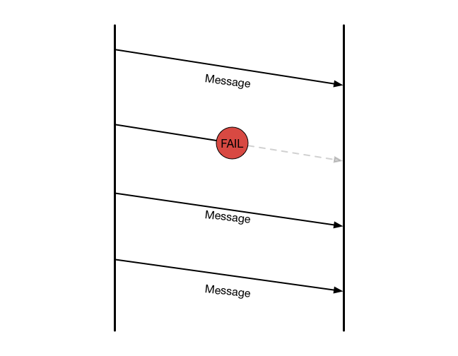

TCP
Transmission Control Protocol
An introduction to one of the most widely used protocols
OSI Layer Model
| Layer | Example | |
|---|---|---|
| 7. | Application | HTTP, HTTPS |
| 6. | Presentation | ASCII, JPEG |
| 5. | Session | Socket APIs |
| 4. | Transport | TCP |
| 3. | Network | IPv4, IPv6 |
| 2. | Data link | Ethernet |
| 1. | Physical | Ethernet |
Why TCP is important
TCP guarantees the authenticity of the message being transferred, thus it is the foundation for many higher level protocols that require data transfer to be error free. These include:
- HTTP/HTTPS
- FTP
- SMTP
- Many more!
How TCP works
The plumbing
The Process
TCP can be divided into three phases, each incorporating concepts to ensure reliable transmission.
- Establish connection
- Transfer data
- Teriminate connection
1. Establish connection
TCP establishes connections using a three-way handshake.

2. Transfer data
TCP has key features that seperate it from other transport protocols like UDP.
- Reliable transmission
- Flow control
- Congestion control
Reliable transmission
Positive acknowledgment with retransmission
TCP Data Handling
TCP recieves data as a stream - then packages it into segments.
TCP segments
A TCP segment consists of two parts - the header and the body (payload).
The payload contains the actual data being sent.
The header contains the following vital information:
- Source and destination port
- Sequence number
- Acknowledgment number
- Flags/Control bits
- Window Size
- Checksum
- Many more!
Flow control
- TCP Data handling is stream oriented, not message oriented
- Unreasonable to send one byte at a time
- Unreasonable to acknowledge one byte at a time
- TCP sends groups of bytes as segments
- TCP acknowledges an arbituary number of bytes with a single ACK
Flow control
Sliding Window
Flow control
Congestion control
Preventing silly window syndrome
Silly Window Syndrome
3. Terminate connection
TCP terminates connections using a four-way handshake.